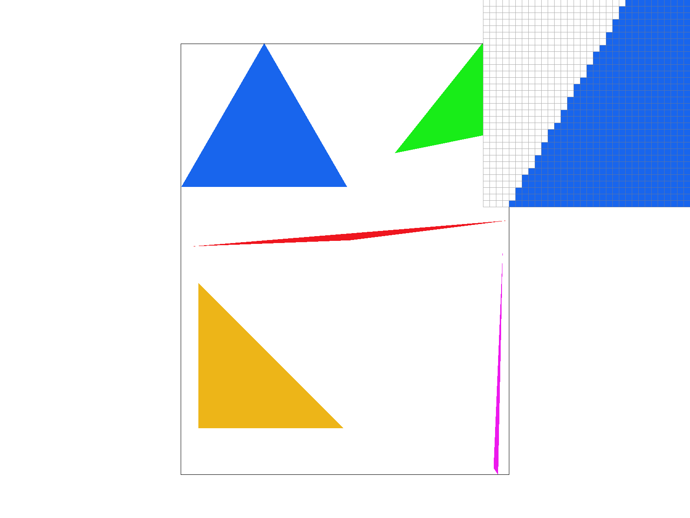
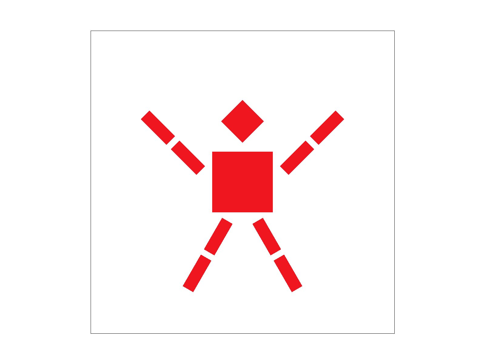
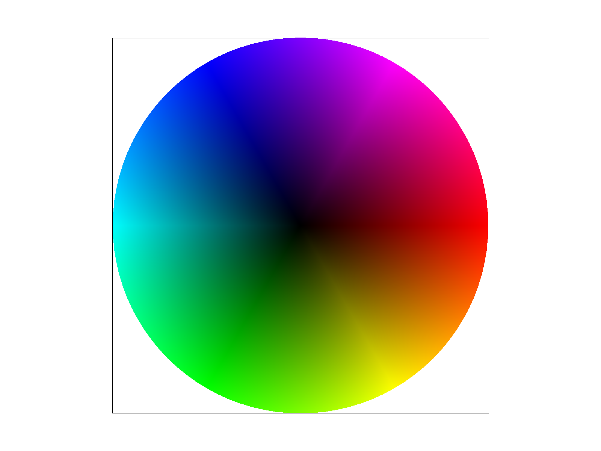
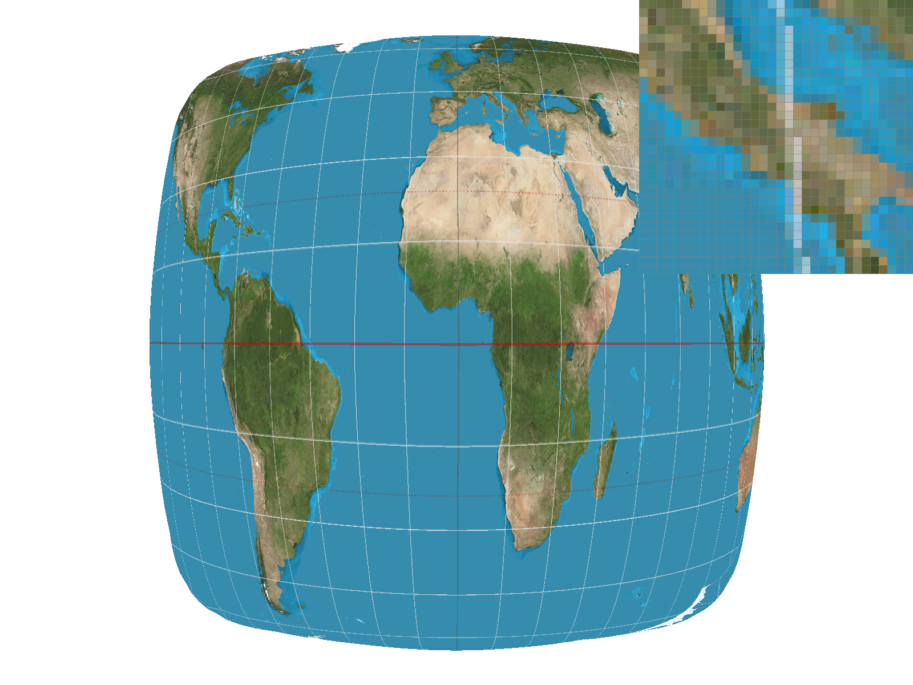
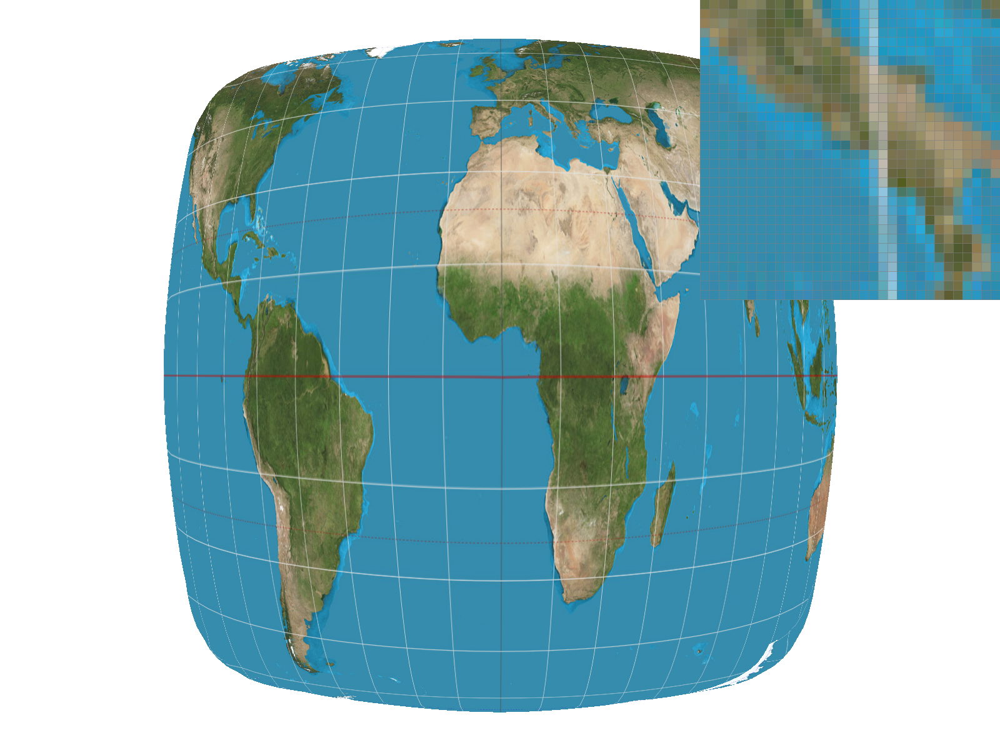
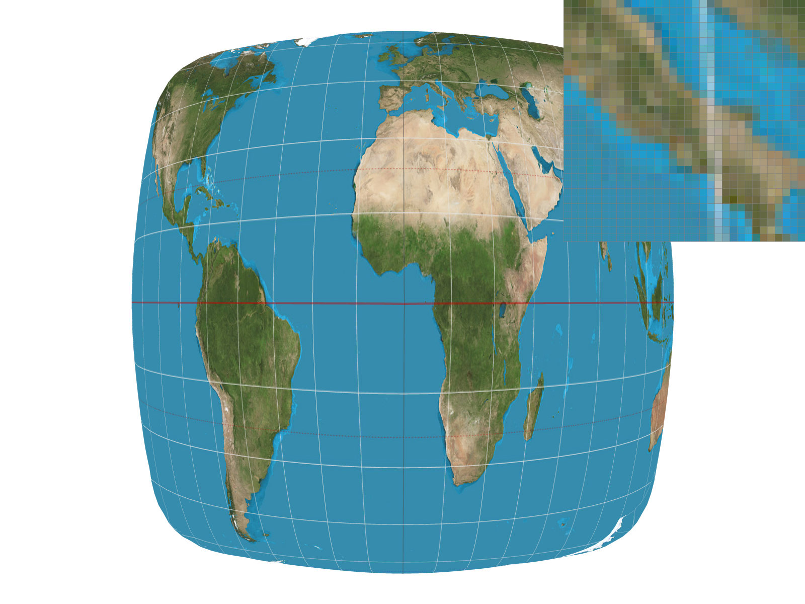
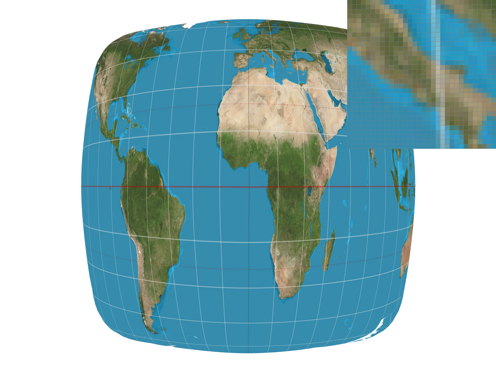
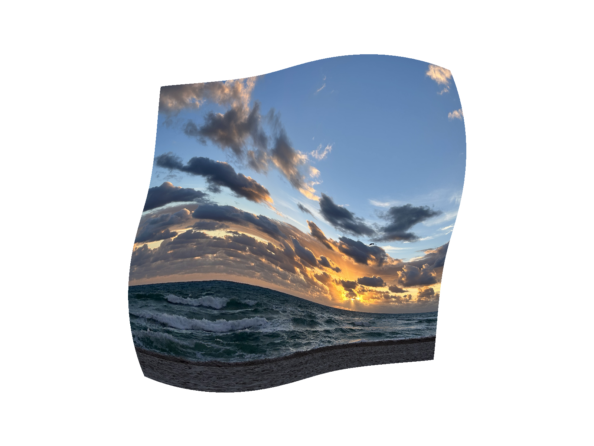

CS 184/284A: Computer Graphics and Imaging, Spring 2024
Homework 1: Rasterizer
Chuyang Xiao, Claire Fang
Overview
In this assignment, we successfully implemented various techniques, including pixel sampling,
supersampling, transforms, barycentric coordinates, texture mapping, and level sampling.
The primary objective was to gain insights into how different techniques work and understand
the benefits and trade-offs among different sampling methods. It's fascinating to observe how
supersampling and level sampling contribute to improved antialiasing. Furthermore, we recognize
the practical significance of barycentric coordinates, as they facilitate the calculation of various
properties for a point within a triangle, given the corresponding values of the triangle's three vertices.
Section I: Rasterization
Part 1: Rasterizing single-color triangles
1. Step-by-step Walkthrough
To determine whether each pixel on the frame buffer is inside a given triangle:
Traversing the entire frame buffer proves inefficient due to its large size, resulting in slow processing.
To address this, we begin by calculating the bounding box for each triangle based on its three vertices.
Subsequently, we assess whether each pixel within the bounding box resides inside the triangle. To simplify pixel
traversal, we approximate the coordinates of the bounding box boundaries and cast to integers with floor function. Moreover,
we designate the midpoint coordinates of each pixel as the point to be evaluated within the function inside(),
determining whether the pixel is inside the triangle.
Next, we determine whether the vertices of the given triangle are in clockwise or counterclockwise order. We
achieve this by calculating the cross product of vector AB and vector AC, where A, B, and C
represent the vertices of the triangle. If the cross product is negative, it indicates a clockwise order; otherwise,
the vertices are in a counterclockwise order.
Furthermore, we employ the three-line test. For vertices in clockwise order, a negative result indicates the pixel
is inside the triangle. Conversely, for vertices in counterclockwise order, a positive result signifies the pixel's
inclusion within the triangle.
If the pixel is inside the triangle, we fill the desgnated color into the corresponding position in the sample
buffer. (Note: In Task 1, where super-sampling is not yet applied, the frame buffer size aligns with the sample buffer size.)
Finally, in the resolve_to_framebuffer() function, we directly transfer the colors from the
sample buffer to the rgb_framebuffer_target. This allows the colors to be displayed on the screen.
2. Algorithm Efficiency
As our algorithm only traverses the bounding box of the triangle rather than the entire frame buffer, its efficiency is
essentially equivalent to checking each sample within the bounding box of the triangle.
3. Image Gallery

Rasterize triangle without supersampling
Part 2: Antialiasing triangles
1. Importance and Implementation
As described in lecture, supersampling is an effective antialiasing approach. The basic idea is to render the
each pixel in the screen space into several samples, then downsample back by averaging the values of the samples.
This helps us to make smoother edges of triangles, reduing aliasing errors.
To implement supersampling, we first resize the sample_buffer to store extra samples inside each pixel. In task 1,
sample_buffer has the same size as frame_buffer. For task 2, we have width * height pixels and sample_rate samples
inside each pixel, which requires sample_buffer's size of (width * height * sample_rate).
Another change, compared with task 1, is to estiate each pixel's value by averaging the value of samples within
the pixel. We compute the average and write each pixel's value into resolve_to_framebuffer.
2. Results
sample rate = 1
sample rate = 4
sample rate = 16
In the images provided above, the impact of sample rate on edge smoothness is evident. At a sample rate of 1, discernible
jaggies are observed, attributed to marking each pixel inside the triangle with the same color. However, as the sampling
rate increases, we sample multiple locations within each pixel, subsequently averaging their values. This results in a
noticeable improvement, particularly along the edges, where pixels are no longer assigned uniform values. Instead, they
exhibit a smoother and blurrier appearance.
Part 3: Transforms
We attempted to lift the robot's spirits by rotating its arms and legs, hoping to bring a cheerful and
dynamic vibe to its appearance.

A robot cheering up
Section II: Sampling
Part 4: Barycentric coordinates
1. Illustration of Barycentric Coordinates
The plot above illustrates the functioning of barycentric coordinates. Assigning red, green,
and blue to the three vertices of the triangle respectively, the colors inside the triangle
result from a blend of these vertex colors. The color at each sample point is calculated
based on its barycentric coordinate: \( C_p = \alpha C_A + \beta C_B + \gamma C_C \). \( \alpha,
\beta, \gamma\) are obtained based on the proportional distances, and they linearly interpolate
values at vertices.
2. Results

Test 7
Part 5: "Pixel sampling" for texture mapping
1. Pixel Sampling
In pixel samping, we usually sample one point per pixel. The color of the pixel is determined by the single sample.
Below decribes how to implement it to perform texture sampling.
Firstly, given the coordinates of the three vertices of the triangle on the frame buffer and the coordinates
of a point inside the triangle, we calculate the Barycentric coordinates \(\alpha\),\(\beta\),\(\gamma\) = 1 - \(\alpha\) - \(\beta\)
by using linear interpolation.
Secondly, with the corresponding coordinates of the three triangle vertices in texture space, we can
use the previously calculated \(\alpha\), \(\beta\), \(\gamma\) and scale by the size of the texture space
to determine the texture coordinates of the internal point.
Since the mapping coordinates on the texture may not be integers, we cannot directly obtain the color
corresponding to the sample. Hence, we have two approximation methods: sample_nearest() and
sample_bilinear().
Two sampling methods
sample_nearest(): find the nearest point to the sample in the texture space assign
the color of that point to our sample.
sample_bilinear(): find the four nearest points to our sample in the texture space and
use bilinear interpolation to calculate the color of the sample.
2. Image Gallery

Nearest samping with sample rate = 1

Bilinear samping with sample rate = 1

Nearest samping with sample rate = 16

Bilinear samping with sample rate = 16
3. Differences between two sampling methods
When the sample rate is low, bilinear sampling outperforms nearest sampling. Due to the small sample
size, bilinear sampling is essential to utilize colors from surrounding points on the texture, creating
a smoother appearance. Relying solely on the nearest point can result in a sharper, less visually appealing image.
At a high sample rate, the distinction between the two sampling methods is minimal. With a large number
of samples, even assigning each sample the nearest point's color generates a smooth visual appearance.
Part 6: "Level sampling" with mipmaps for texture mapping
1. Level Sampling and Its Implementation
a. Level Sampling
Level sampling is employed to enhance texture mapping and minimize antialiasing artifacts. By mipmapping at suitable levels, a lower-resolution image is generated. The continuous positive nature of the level allows for two estimation approaches: selecting the nearest integer level or performing linear interpolation between two levels. The latter provides a smoother transition between levels and can mitigate certain artifacts associated with abrupt level changes.
b. Implementation Details
Firstly, we use the same method described in Task 5 to calculate the texture coordinate of the sample \((x,y)\) and
its neighbours \((x+1,y), (x,y+1)\), from which we get \((u,v), (u_dx,v_dx), (u_dy,v_dy)\).
Secondly, we calculate \(\frac{du}{dx}\),\(\frac{dv}{dx}\),\(\frac{du}{dy}\),\(\frac{du}{dy}\)by
\(u-u_dx, v-v_dx, u-u_dy, v-v_dy\). After that, we can use \(L = \max{(\sqrt{({\frac{du}{dx}})^2 + ({\frac{dv}{dx}})^2}, \sqrt{({\frac{du}{dy}})^2 + ({\frac{dv}{dy}})^2})}\) and
\(D = \log_2L\) to calculate the mipmap level D.
Thirdly, since we have three level sampling methods: L_ZERO, L_NEAREST, L_LINEAR, we implement them in
Texture::sample(). For L_ZERO, we just use the zero-level mipmap's color; For L_NEAREST, we use the integer nearest to D as the mipmap level and get the color from this mipmap;
For L_LINEAR, we use linear interpolation between the colors of two mipmap levels around D as the sample color.
2. Pixel Sampling, Level Samping and Supersampling
a. Speed
Pixel Sampling samples one point inside each pixel, which means we only need to obtain the color
at one position per pixel. This technique is the fastest among three.
Level Sampling renders a lower-resolution representation of the original image by using mipmaps, which
improves the speed of the technique.
Supersampling samples multiple points inside each pixel, which increases the computational work needed
for obtaining the color of a pixel. This makes it the slowest among three.
b. Memory Usage
Pixel Sampling has the lowest memory requirements, as it only stores one color value per pixel.
Level Sampling increases the memory usage as it needs extra space for a mipmap. According to the dicussion
worksheet, the storage of an entire mipmap is \(\frac{4}{3}x\), where \(x\) is the size of the original texture.
Supersampling has memory usage proportional to the sample rate inside each pixel. It requires extra space
to store the multiple samples per pixel.
c. Antialiasing Power
Pixel Sampling can lead to aliased artifact, so it has the least antialiasing power.
Level Sampling reduces jaggies by using lower-resolution textures for distant objects, as shown in plots below.
This helps smooth the edges and transitions.
Supersampling is also a good antialiasing technique, as it calculate the value of color in one pixel by
sampling at several positions and downsampling, which results in smoother edges.
3. Comparison between different methods

L_ZERO, P_NEAREST
L_ZERO, P_LINEAR
L_NEAREST, P_NEAREST
L_NEAREST, P_LINEAR
L_LINEAR, P_NEAREST
L_LINEAR, P_LINEAR
Section III: Art Competition
If you are not participating in the optional art competition, don't worry about this section!